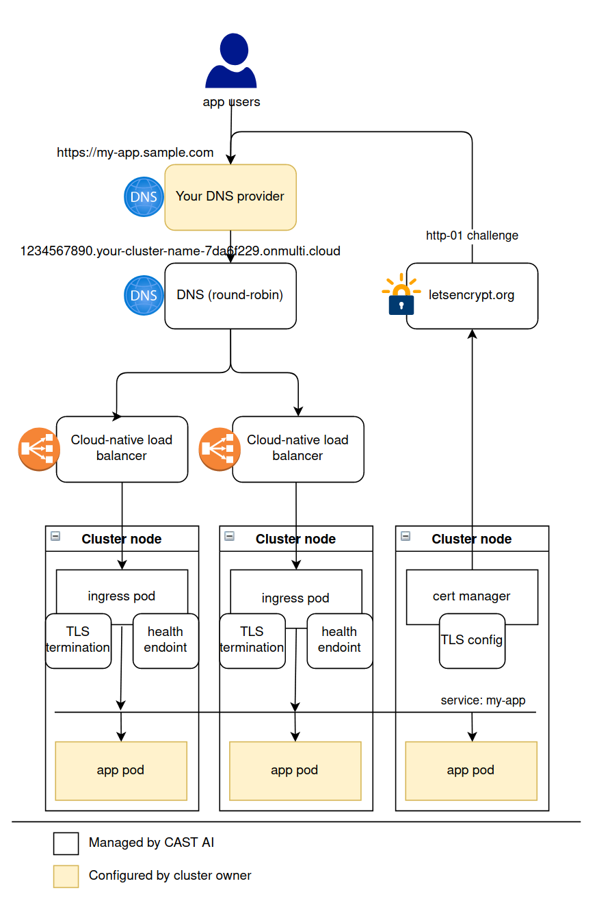

Cluster infrastructure
Nodes
Overview on where cluster virtual machines will be provisioned on your cloud:
Ingress
CAST AI provisioned clusters contain all the infrastructure needed to equip your app with an external TLS endpoint:
- DNS entry to round-robin;
- Load-balancing infrastructure: cloud-native load balancers that route traffic to a sub-section of your cluster (e.g. traffic that hits AWS load balancer will route to AWS nodes);
- Nginx ingress controller, paired with TLS certificate manager, that listen to your deployed resources and maintain routing&TLS configuration;
- Metric collection for your ingress traffic;
All that is left for you as an application developer is to deploy your app, ingress resource, and configure a domain alias of your choice. See the ingress guide for more details.

Network details
Region & zone
Each cloud maps a selected CAST AI region to a matching region on that cloud.
For example, US East (Ashburn) region maps to:
- AWS: us-east-1
- GCP: us-east4
- Azure: eastus
Currently, on each cloud CAST AI builds a single-zone setup of your cluster. Zone selection is cloud-specific.
Master nodes inbound
| Protocol | Port | Source | Description |
|---|---|---|---|
| tcp | 6443 | 0.0.0.0/0 | k8s API server |
| udp | 51820 | 0.0.0.0/0 | WireGuard (if used) |
Worker nodes inbound
| Protocol | Port | Source | Description |
|---|---|---|---|
| udp | 51820 | 0.0.0.0/0 | WireGuard (if used) |
| tcp/udp | NodePort | 0.0.0.0/0 | k8s Service with type=LoadBalancer |
Subnets
| Range | Description |
|---|---|
| 10.96.0.0/12 | k8s services |
| 10.217.0.0/16 | k8s pods |
| 10.4.0.0/16 | WireGuard |
| 10.0.0.0/16 | GCP VPC. Smaller /24 blocks are allocated for subnets. |
| 10.10.0.0/16 | AWS VPC. Smaller /24 blocks are allocated for subnets. |
| 10.20.0.0/16 | AZURE VPC. Smaller /24 blocks are allocated for subnets. |